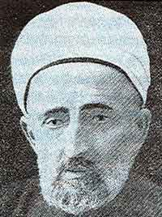

Muallim Cûdi (1863-1926)

Son dönemlerde yetiþmiþ alim ve þairlerimizdendir. Asýl adý Ýbrahim'dir. Uzun yýllar hocalýk yaptýðý için "Muallim", þiirlerinde kullandýðý mahlastan ötürü "Cûdî" olarak anýlmýþ ve "Muallim Cûdî" lakabýyla tanýnýp þöhret bulmuþtur. Trabzon’da hocalýk yapmýþ, eðitim ve öðretime çok büyük katkýlarda bulunmuþtur. Kurtuluþ Savaþý sýrasýnda Milli Mücadeleyi desteklemiþ ve halký teþvik etmiþtir. Ýki kez milletvekilliði teklif edildiði halde kabul etmemiþtir. Hocalýk yaptýðý sýrada çok sayýda eser yazmýþ ve bunlarýn bazýlarý basýlmýþtýr. Risâle-i Nur'da "Muallim Cûdî" olarak kendisinden söz edilmiþtir. Kur'an'ýn þefaatine nail olmasý için duada bulunulmuþtur. (Barla Lahikasý, 1996, s. 132)Ýbrahim, 1863 yýlýnda Trabzon'da doðdu. Babasý müderris Hacý Mehmed Efendi, Ýskender Paþa Medresesi'nde çalýþmýþtýr. Okul hayatýna Tabakhane'deki Ýlk Mekteb'e giderek baþladý. Akabinde Müftü Medresesi'ne giderek buraya devam etti. Birçok hocadan ders aldýktan sonra Semercizade Hacý Mehmed Efendi'den icazet alarak mezun oldu.
Ýbrahim, okulunu bitirdikten sonra 1883 yýlýnda Hamidiye Mektebi'nde göreve baþladý. Burada Türkçe derslerini okuttu. Bu okulda görev yaptýðý sýrada Mekke'ye gitti. Bir süre Mekke'de kaldý. Döndükten sonra Trabzon'da tekrar muallimliðe baþladý. Sonradan kendi adýný alacak olan Zeytinlik Mektebi'nde uzun yýllar muallimlik yaptý. Bu görevinden dolayý "Muallim" olarak anýldý ve tanýndý. Uzun süre görev yaptýðý okula çok büyük katký saðladý. Okulun baþarý grafiði yükseldiði için çok raðbet gördü ve Trabzon'un eðitim hayatýnda önemli bir yer edindi.
Muallim Ýbrahim, görev yaptýðý okulda ders yapmakla yetinmedi. Ýlk bastýðý eseri olan "Esmaü'l-Hüsna"dan dolayý elde edilen gelirle okulun geniþletilmesi çalýþmasýna maddi katký saðladý. Günümüzde görev yaptýðý okul, Ýbrahim Cûdi Bey Ýlköðretim Okulu olarak hizmet vermeye devam etmektedir.
Muallim Ýbrahim, görev yaptýðý okulun dýþýnda baþka okullarda da dersler verdi. Ýranlýlar tarafýndan açýlan Nâsýrî Ýdadisi'nde hocalýk ve müdürlük; Fransýz, Ermeni ve Rum okullarýnda Türkçe hocalýðý yaptý.
Muallim Cûdi, 1903 yýlýnda Trabzon Ticaret Mahkemesi daimi üyeliðine tayin edildi. Bu mahkemenin kaldýrýlýþýna kadar geçen yedi yýl boyunca görevini sürdürdü. Ýlmiye sýnýfýnýn önemli ve yüksek derecelerinden biri olan "mûsýle-i Süleymaniye" rütbesini 1908 yýlýnda aldý. Girdiði sýnavý kazandýktan sonra 1910 yýlýnda Trabzon Mekteb-i Sultanisi'nde Arapça hocalýðýna baþladý. Ayrýca, Askeri Rüþtiye'de Türkçe derslerini okuttu. Tüm bunlarýn dýþýnda Trabzon Maarif Meclisi üyeliði de yaptý.
Muallim Cûdi, eðitim ve öðretim iþlerinin dýþýnda gazete yayýný ile de ilgilendi. Trabzon Valiliði tarafýndan çýkarýlan gazetede bir yýl kadar baþyazarlýk görevinde bulundu. Birinci Dünya Savaþý'nýn çýkmasý ve Trabzon'un iþgalinden sonra Ankara'ya gitti. Ankara'da bulunduðu sýrada Ankara Sultanisi'nde Arapça derslerini verdi. Ayrýca Darülmuallimat'ta da dini ilimler dersini okuttu. Mondros Mütarekesi'nin imzalanmasýndan sonra tekrar Trabzon'a geri döndü.
Muallim Ýbrahim, Trabzon'da Mekteb-i Sultanî'deki görevine devam etti. Bu arada iþgal güçlerine karþý her yerde milli müdafaa cemiyetleri teþekkül ettirildiði gibi Trabzon'da da benzer faaliyetler vardý. Bu meyanda kurulan Trabzon Muhafaza-i Hukuk-u Milliye Cemiyeti'nin kurucularý arasýnda yer aldý. Bir süre cemiyetin reisliðini de yaparak Milli Mücadelede aktif rol aldý.
Milli Mücadeleyi yürüten insanlar, halkýn sevgi ve güvenini kazanmýþ olan þahsiyetlerden azami ölçüde faydalandýlar. Özellikle alimlerin verdikleri vaaz ve hutbeler insanlarý heyecana getirdiði gibi, milli duygularýn da en üst seviyeye çýkarýlmasýnda ön ayak oldu. Ýbrahim Cûdi Efendi de bu çerçevede elinden gelen katkýyý saðladý. Konferanslar vererek halký Milli Mücadeleye, birliðe teþvik ve davet etti. (Kadir Mýsýroðlu, Sarýklý Mücahitler, Ýstanbul 1977, s. 392).
Ýttihat ve Terakki Cemiyeti döneminde olduðu gibi Kurtuluþ Savaþý sýrasýnda da milletvekilliði teklif edilen Muallim Ýbrahim, her iki seferde de bu teklifi kabul etmedi. 1925 yýlýnda Trabzon Müftülüðüne tayin edildi. Bu görevi sadece bir yýl kadar sürdü. Çünkü, 1926 yýlý Ramazan ayýnda vefat etti.
Muallim Cûdi Arapça, Farsça ve Fransýzca dillerini çok iyi öðrendi. Arapça ve Farsça þiir yazacak kadar bu dillere hakimdi. Divan þiir geleneðinde yetiþti. Yapýya önem verip çok saðlam bir dil anlayýþýna sahipti. Dilde açýklýk ve anlaþýlabilirliðe önem verdi. Çok sayýda þiir yazdýðý bilinmekle beraber, henüz bunlarýn tamamýna ulaþýlmýþ deðildir. Ankara'da bulunduðu sýrada "Divan"ý basýldý. Muhtelif gazete ve dergilerde þiirleri yayýmlandý.
Risâle-i Nur'da, kendisinden övgüyle söz edilmekte; "Merhum Muallim Cûdi'nin kasidesi mübarektir. Cenâb-ý Hak o zatý þefâat-i Kur'ân'a mazhar etsin!" (Barla Lahikasý, 1996, s. 132) ifadelerine yer verilmektedir.
Eserleri:
Ýbrahim Cûdî, aralarýnda ders kitaplarýnýn da bulunduðu çok sayýda eser yazmýþtýr. Eserlerinin yayýnlanmasý ve basýlmasýnda, arkadaþý ve ayný zamanda kitapçý olan Hamdi Efendi'nin çok büyük katkýsý olmuþtur. Kitaplarýnýn basýlmasý gerek Trabzon, gerekse yakýn çevrede bulunan çok sayýda insanýn istifadesine sunulmuþ ve çok büyük faydalar saðlamýþtýr.
Tarih-i Enbiya ve Ýslam'da Hazreti Adem'den (as) baþlayarak Peygamber Efendimize (asm) kadar gelen peygamberlerin hayatlarý hakkýndaki bilgilere yer verilmektedir. Ayrýca bazý Müslüman hükümdarlar hakkýndaki bilgiler de yer almaktadýr. Arap edebiyatýndan derlenip ibret verici hikayelerin, tercümelerinin aktarýldýðý eseri Nevadir-i Nefise'dir. El-Hayatü'l-ebyaz'da ise Ramazan ayýnda yapýlan ibadetler hakkýndaki fýkhi bilgiler ve açýklamalar yer almaktadýr. Kenzü'l-esna fi þerhi'l-esmai'l-hüsna, bir þerh kitabýdýr. Yeni harflerle de basýmý yapýlmýþtýr.
Lgat-ý Cûdî, en son kaleme aldýðý önemli eseridir. Türkçe'ye Arapça ve Farsça'dan geçen kelimelerin açýklamalarýna yer verilmiþtir. Örnekler manzum ve mensur olarak verilmektedir.
Ýbrahim Cûdî sýralanan eserleri dýþýnda ders kitabý olarak okutulan eserler de yazmýþtýr: Rehber-i Avamil, Teshil-i Elifba-yý Osmanî, Kýraat-ý Türkiye, Ýlk Talim-i Kýraat, Teshil-i Sarf-ý Osmanî, Ulum-u Diniye Dersleri, Ýmla ve Kýraat.